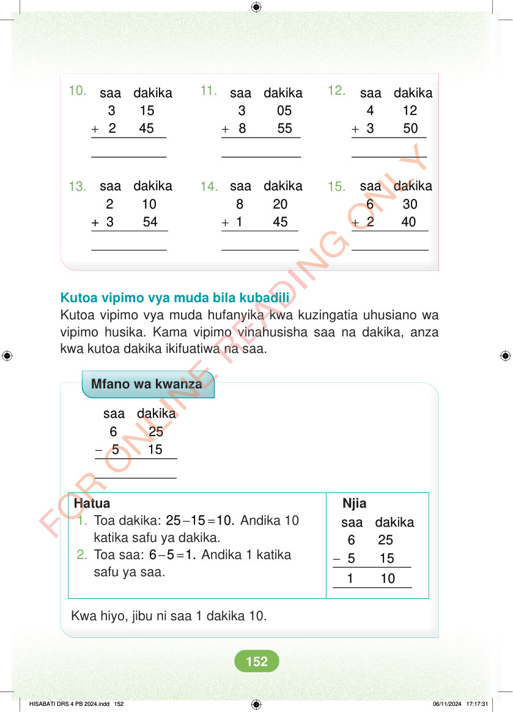

10. 11. 12. + + + saa dakika 3 15 2 45 saa dakika 3 05 8 55 saa dakika 4 12 3 50 13. 14. 15. + + + saa dakika 2 10 3 54 saa dakika 8 20 1 45 saa dakika 6 30 2 40 Kutoa vipimo vya muda bila kubadili Kutoa vipimo vya muda hufanyika kwa kuzingatia uhusiano wa vipimo husika. Kama vipimo vinahusisha saa na dakika, anza kwa kutoa dakika ikifuatiwa na saa. Mfano wa kwanza - saa dakika 6 25 5 15 Hatua Njia - saa dakika 6 25 5 15 1. Toa dakika: - = 25 15 10. Andika 10 katika safu ya dakika. 2. Toa saa: - = 6 5 1. Andika 1 katika safu ya saa. 1 10 Kwa hiyo, jibu ni saa 1 dakika 10. HISABATI DRS 4 PB 2024.indd 152 HISABATI DRS 4 PB 2024.indd 152 06/11/2024 17:17:31 06/11/2024 17:17:31